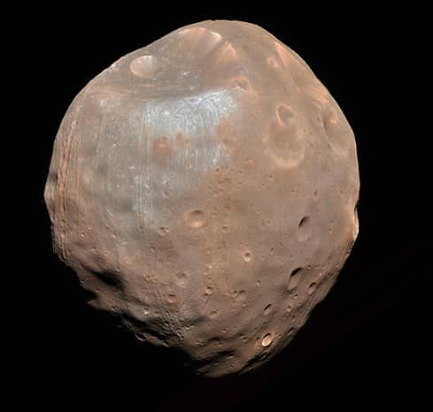

(2024/03/13)
火星の概要
太陽系第四惑星です。
直径が6800kmです。二つの衛星を持っています。
平均気温は-63℃、最低温度は-140℃、最高温度は20℃です。
自転周期が24時間37分で地球とほぼ同じです。
公転周期は687日です。
火星の構造
基本構造
中心から鉄の核、マントル、地殻で構成された岩石惑星です。
地球と構造が同じですが内部の温度が低く、磁場もありません。
また、火星にはプレート運動がありません。
火星の表面は酸化鉄の岩石で覆われており、そのため赤く見えます。
火星の大気
火星には薄い大気があり、そのほとんどが二酸化炭素です。
磁場が弱かったことが原因で大気が薄くなりました。
火星の地表
火星には様々な峡谷や火山があります。
中には太陽系最大の火山もあります。
オリンポス山は標高が2万500kmあり麓の直径が600kmあります。
エベレストの3倍の高さがあります。
山頂部のくぼんでいる部分、カルデラには富士山が丸ごと入ります。
現在では火山活動は行われていません。
火星の水
火星には水があったと考えられています。
ハビタブルゾーン
昔は火星はハビタブルゾーンの外側だという説が有力でしたが、
現在では火星の軌道付近までハビタブルゾーンがあるという説が有力です。
砂の運搬や堆積
火星には様々な地形があります。その中には、水によって土が運ばれた後に風化したことで
現れたと考えられる地形や、水によって運ばれた砂が堆積してできた地層があります。
川の痕跡
左の画像のように長い峡谷ができています。
これは川や地下水路などの継続的に流れる水の後が
陥没してできたと考えられています。
現在では火山活動は行われていません。
なぜ水がなくなったのか
火星に磁場がないことで太陽風に曝され元は濃かった大気が吹き飛ばされたと考えられています。
火星の2つの衛星
火星には二つの衛星があります。
フォボスとダイモスです。
フォボス

ダイモス
フォボス
火星から9400kmの軌道を周回しています。
公転周期は7時間40分です。
ダイモス
火星から2万3500kmの軌道を周回しています。
公転周期は30時間です。
宇宙豆知識(火星からの夕日の色は？)
地球では夕日は赤く見えます。
その原因は太陽光が斜めに大気に入ってくることで距離が長くなります。人の目に届くまでに多くの物質にぶつかり散乱
が発生して、赤色以外の光がなくなってしまうからです。波長の短い青と紫から先に散乱していきます。
しかし、火星では酸化鉄の赤褐色の塵が多く飛んでいるために、赤色が散乱によって見えなくなります。
そのため、火星では夕日が青く見えます。